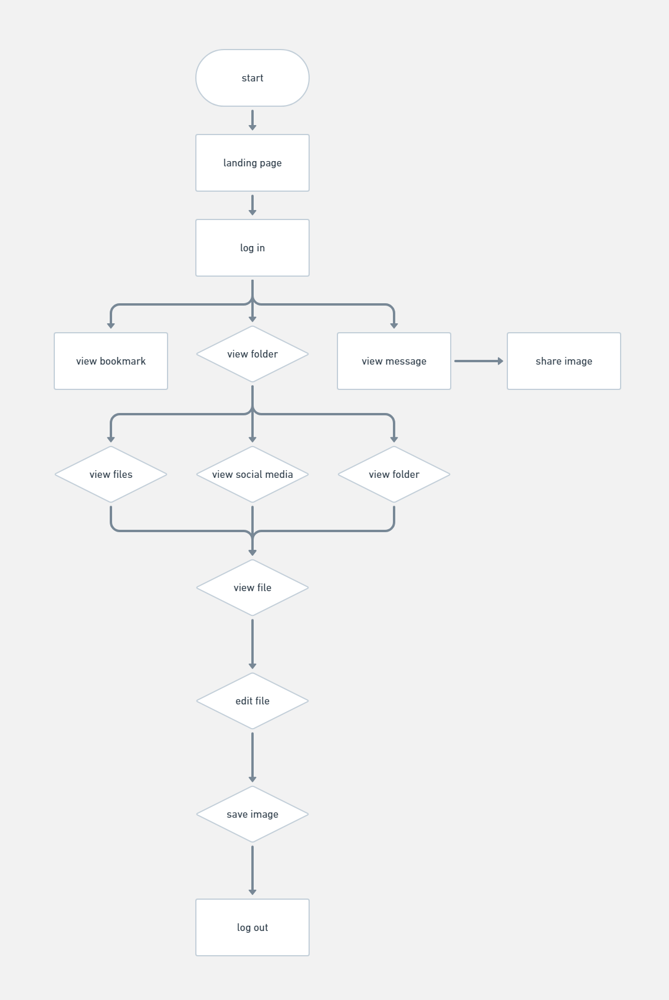
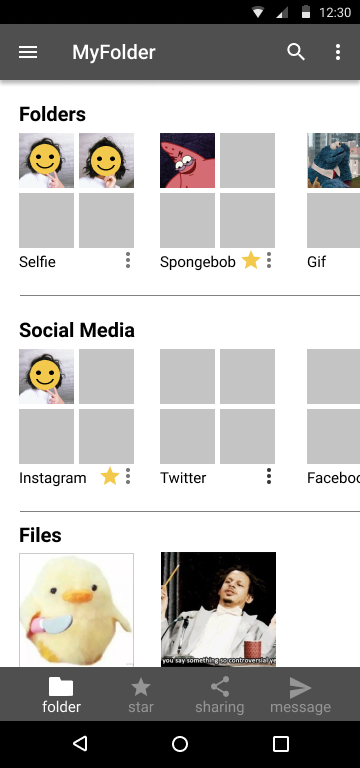
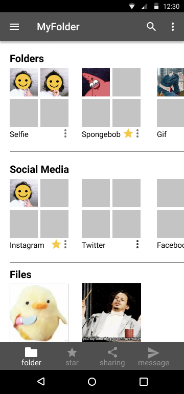
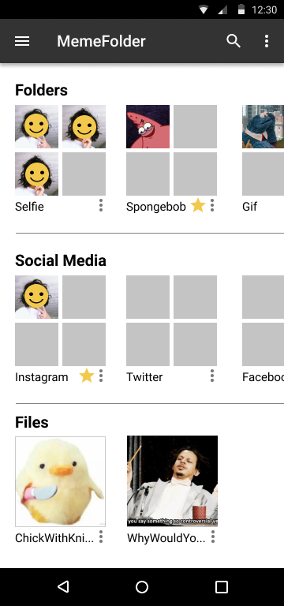
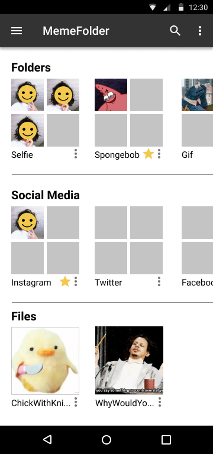

DESIGN ROLES
- UX Design
- Research
- Visual Design
- Brand & Identity
DELIVERABLES
- User Surveys
- Personas
- User Stories
- User Flow
- Competitive Analysis
- Wireframes
- Style Guide
- User Testing
- User Research
- Prototype
TOOLS
- InVision
- Adobe Photoshop
- Figma
- Google Surveys
- Peek User Testing
- Usability Hub
- Google Form Surveys
OVERVIEW
When this project started, I was asked to build a cloud storage program that allowed users to the following things: 1) save content from the internet 2) organize content 3) create content or uploading files from a hard drive 4) share items from the cloud to other people and collaborate There was not a lot of specific directives to follow regarding this process outside the objectives stated above. However, after going through several different iterations of the possible directions for this program’s brand, I decided on MemeFolder, a program that allows users to save image reactions and gifs from the internet and organize them into folders. It also allows users to edit image files so that they can create their own memes, as well as share them with friends.
PROBLEM
I got my inspiration for this program from two places: 1) a viral image which shows an individual struggling to find an image reaction due to their highly disorganized and overcrowded folder, and 2) under viral twitter tweets, users would respond with humerous gifs, and other users would request for the original poster to share how they found that gif. The MemeFolder should allow users to address both problems, which appear to happen rather frequently online. For many Millennial users, social media is an integral part of their lives, and as such it becomes necessary to be knowledgeable of meme culture as a visual style of communication. Considering the proliferation of meme formats available, it can become frustrating for users to find and keep track of existing memes in their phones or desktop; it can also be equally frustrating for users who are unable to find the memes or gifs that they want, as there is no easy way to easily get these image files directly from social media sites.
USER SURVEY
The user survey was created before the branding was established. I wrote the questions assuming that I will be creating a generic cloud storage program. The results I got from the people who completed the survey went as follows:
80% of users have a cloud storage The most common reasons why people use a cloud storage is 1) for work/school: 85.7% 2) personal reasons: 71.4% 3) collaboration and file sharing: 64.3% When asked what features they rely on, 82.1% of users 1) upload files to backup data 2) upload files for easy access between devices 3) file sharing with friends/colleagues. Majority of people surveyed are Millennials or Generation Z.
view survey questions
My intention was to create a cloud storage that addressed the aforementioned issues, which is evident in early prototypes. However, the idea for the meme editing feature came because 100% of the surveyed users are active participants of social media.
USER PERSONA
User personas were created based on the results from the survey. My users were profiled after the Facebook controversy and how they violated user privacy, which affected how they responded to the questions.
- Age: 33 years
- Sex: Female
- Occupation: Medical Interpreter
- Location: Yucatan, MX
- MOTIVATIONS:
- An avid nature lover, Azul first started using cloud storages so that she can enjoy the outdoors while doing her homework on Google Drive from her phone. While she is currently an infrequent user now that she has left her college years, Azul seems to be motivated by the convenience that cloud storages can give her, and the freedom of movement so that she can do her work wherever she wants.
- GOALS:
- 1. Save her writing and pictures
- 2. Share files with friends
- 3. Backing up important personal data
- FRUSTRATIONS:
- 1. Inability to trust how the companies managing cloud storages use people’s personal information
- 2. Lack of ethics in large companies like Google and Facebook
- 3. Inability to personalize/accessorize cloud storages
- BIOGRAPHY
- Azul lives with her cat in Mexico. An introvert with social anxiety, she is an avid user of social media, which she relies on to make connections with online communities. She is passionate about social justice and has a strong sense of ethics and morality. On her time off, she loves playing the ukelele and singing songs, as well as reading and writing.

AZUL
reluctant user
- Age: 22 years
- Sex: Non-Binary
- Occupation: Student
- Location: Lawndale, CA
- MOTIVATIONS
- Charlene primarily uses cloud storage to do their school work as a college student, as well as for their part time job as a college student assistant. They find that using the file sharing feature to collaborate with their classmates makes doing work much more convenient. However, they express wariness regarding the information that companies like Google collects about their personal life, and would like to see tech creators be more ethical about how they create new products.
- GOALS:
- 1. Using file sharing features for collaborative reasons in school
- 2. Backing up personal data
- 3. Saving old, sentimental pictures
- FRUSTRATIONS:
- 1. Fear of being unable to control the data put in cloud
- 2. Distrust towards tech industries, and how it can infringe on an individual’s personal liberties
- 3. Tech being inaccessible for people who come from underprivileged backgrounds
- BIOGRAPHY
- Charlene lives with their mother, sister, and brother. They are fond of playing games on their Nintendo Switch, and likes to hang out with friends, read books, and knit in their spare time. They are an avid user of technology, and use it daily for things such as social media and listening to music.

CHARLENE
ethical pragmatist
USER STORIES

USER FLOW
COMPETITIVE ANALYSIS
I chose Google Drive and Dropbox, which are two of the most popular cloud storage devices. I also chose to compare it with Amazon Drive, as it is an atypical cloud storage device that sells photo albums based on the pictures that users upload to this device. I wanted something unusual to compare with more traditional cloud storages to see how it would do in comparison.
This is the most popular cloud storage among the users surveyed, and among the most user friendly. Google Drive has file editing programs and allows for real time collaboration between different users.
Dropbox is another widely used cloud storage, and is especially popular for businesses. They do have problems with security, as well as with syncing, which results in duplicate files.
Amazon Drive is not as widely used, though it comes from a strong brand. While user interface is not as friendly, its primary purpose in selling photographic memorabilia could attract a niche market.
view detailed analysis
WIREFRAMES
The wireframes for the initial design were made based on a protytpe called MyCloud, which was the first iteration of this project.

view wireframe
BRANDING
The style guide went through three iterations as I developed the brand for this cloud storage device.
The first iteration was called MyCloud , which was a generic device that allowed users to upload files and organize them in folders, as well as share them with friends. It offered one file editing program, which allowed users to edit pictures and make their own memes, in deference to the Millennials/Gen Z majority that took my survey. After completing the prototype, I realized that I should commit to this direction, and rebranded my program.
This resulted in the second iteration MyFolder, which is a cloud storage specifically made to collect and organize memes, gifs, and reaction images, mostly for the purpose of social media. This is an app-only program also allows users to create their own memes and share it with friends.
After making more changes to the brand, I came up with MemeFolder in the third iteration. It has the same functionality as MyFolder, but with minor changes in the logo and color scheme.
STYLE GUIDE
In this section, I’ve included the style guides for all three iterations of the program.
For the MyCloud iteration, I created the following logo and the color scheme that was to go with it, as well as the chosen font:

I went with blue and yellow to convey the sky to match the cloud brand, and included darker red and green to give the program a neutral appearance since I believed the aforementioned colors to be too bright. For the font, I went with Righteous for the rounded edges to match the curves in the logo.
For the MyFolder iteration, I created the folowing logo and color scheme, as well as the chosen font:

I chose more dramatic colors to catch the eyes of a younger audience, focusing primarily on the contrast between dark grey and pink. I also chose Dosis for the logo’s font, as its much narrower appearance gives it a sleeker and more modern look. The change in the logo, a smiley face superimposed on a folder, is a reflection of how users will be able to pull image reactions from this folder in order to convey their emotions on social media.
For the MemeFolder iteration, I created the following logo and color scheme, as well as the chosen font:


I made minor changes to the logo to make it look minimalistic without appearing to be childish, and added different variations of what it could look like under different cirumstances. There is also minor color changes, as I chose a marginally darker grey to provide a greater contrast with the pink. The fonts have remained unchanged.
USER TESTING
In this section, I’ve included the user testing for all three iterations of the program.
For the MyCloud iteration, I meant to create a desktop version with a mobile app. In the intial testing, I looked at different preferences users have with how the columns are positioned and whether the stars should be located before or after the name of the file. In the result of the preference test, people preferred a narrow left hand column and the star located before the file name.
view user testing result
In the MyFolder iteration, I changed direction to create an app only version. The program initially had a bar at the bottom of the screen and app settings in the side bar. This was, however, an inconvenient design, and after running a test I ended up removing both and putting the features in the side bar instead.
 

view prototype


view prototype
In the MemeFolder iteration, I kept the integrity of the app, but changed the logo and made minor adjustments to the color scheme. Having recieved feedback that the logo at the time was not very aesthetically pleasing, I made adjustments to improve its appearance.
 


PROTOTYPE
The completed prototype for the MemeFolder app can be found here:
view prototype
In conclusion, the MemeFolder app is a personalized product that is geared to suit individual users. This is geared towards Millennials who can use it to save and create memes, which is an important part of social media culture. It is easy to use, and offers features that is useful to the average user.